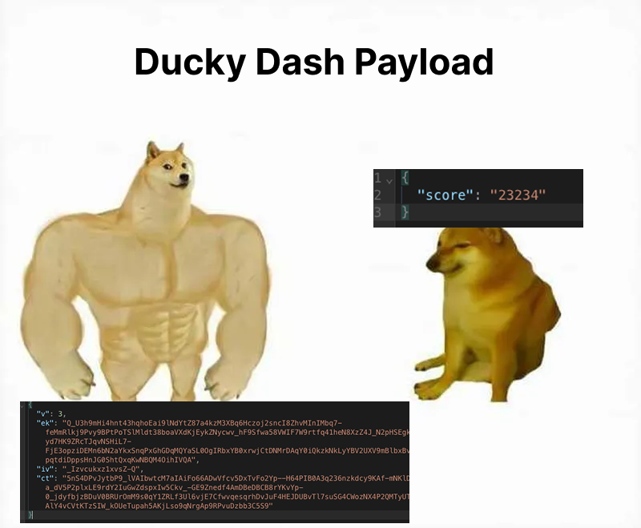
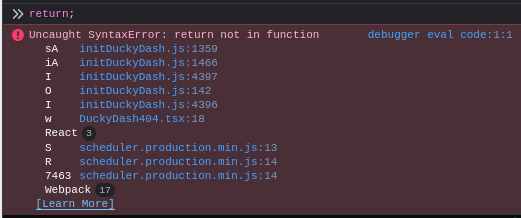
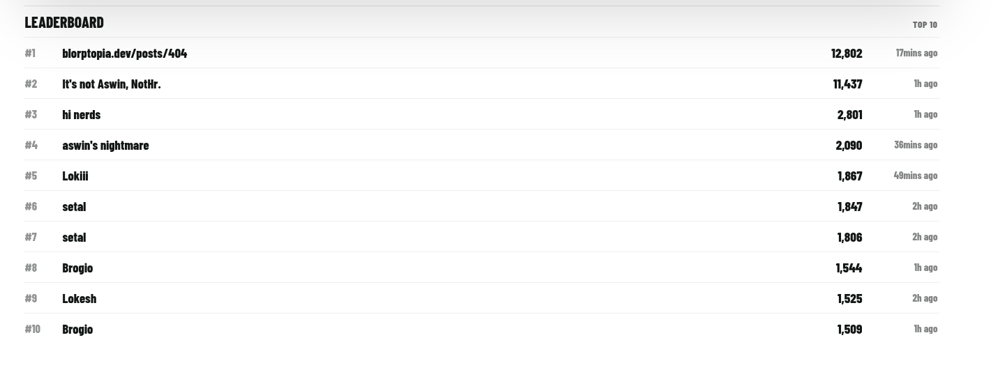

Breaking Ente's 404 page
Introduction
Recently, Aswin Asok of Ente added a chrome-dino like game to their 404 page with a leaderboard.
Shortly after this was released someone changed their score to 999999
The leaderboard was implemented initially by just sending the score to an endpoint which only validated that the score was less than 999999 so that it fit on the score pill in the UI, however no other anti cheat.
A few minutes later I saw Aswin Asok post a meme about making it harder for cheaters to cheat the leaderboard. Challenge accepted.

The updated system has a few different parts
- The score is now sent as an encrypted blob to the server instead of just plain JSON
- Server side validation
The server side validation starts the second you press the play button by notifying the server that you have started a run and getting a runId that can be used to track the run throughout back. When you end the run, this will let the server compare if you lied about the duration of your run.
The second part of the server side validation is to collect metrics client side and report it in the final blob when completing a run. This currently collects
- The run duration
- The run distance
- The highest combo you reached
- How many obstacles has spawned
- How many obstacles you passed
- How many times you pressed the jump key
- How many times you jumped
- How many times you double jumped
- If you died by T-Rex or an obstacle
- What obstacle killed you
- How many pickups you collected
These are compared against eachother and against reasonable limits to see if you have cheated, which invalidates your run. For example, if you tried to set the comboDuration really high your run would get rejected.
Breaking it
While the individual apps of ente is open source like Ente Photos, the Ente marketing pages are not open source, which is the only place the minigame is present. However thankfully Ente ships source maps so we can read and debug the frontend code quite easily, however not modify it.
My first attempt was to set a breakpoint at the top of the death function and manually type return every time. Sadly however you cannot use return while in a breakpoint

My second attempt was to give myself invincibility through the ingame shield powerups. I did this by putting a breakpoint at the top of the hitObstacle function and setting state.activePower to shield and state.shieldCharges to some high number every time I hit an obstacle.
Unfortunately however, I am quite bad at the game. This means that I end up hitting the breakpoint often and needing to manually re-enable shields again.
This can be solved by abusing log points. Log points work somewhat similar to console.log(logpoint contents here), and since setting a variable also returns it, putting state.activePower = "shield" in the logpoint both sets the activePower attribute but also logs "shield" when encountered.
The results

Thanks you Aswin Asok for the fun challenge!